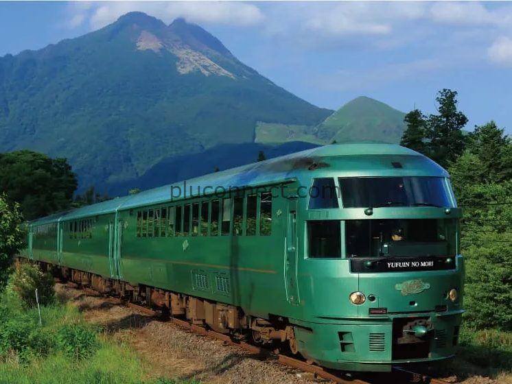

엄마 아빠랑 후쿠오카·유후인 · D-3
11월 26일(목) 오전 7시, 인천공항에서 만나요
제2터미널 3층 D카운터 앞
 대한항공 KE787 오전 9:00 출발 → 후쿠오카 오전 10:25 도착
대한항공 KE787 오전 9:00 출발 → 후쿠오카 오전 10:25 도착

내가 챙길 것 1개 남았어요 — 혈압약 6일치
출발 전날까지 챙겨요
날짜별 흐름
목
1일차 · 후쿠오카(하카타)
비행기 KE787 오전 9:00 출발
호텔: 하카타 리버사이드 호텔
정하는 중 2곳
금
2일차 · 후쿠오카(하카타)
오전 10시 다자이후 텐만구
호텔: 하카타 리버사이드 호텔
정하는 중 2곳
토
3일차 · 유후인
유후인노모리 열차 오전 9:17 하카타 출발
숙소: 유후인 산소 료칸
정하는 중 1곳
일
4일차 · 유후인
저녁 6시 30분 료칸 가이세키
숙소: 유후인 산소 료칸
정하는 중 1곳
월
5일차 · 집으로
비행기 KE788 오전 11:55 출발 · 인천 오후 1:30 도착
정하는 중 1곳
